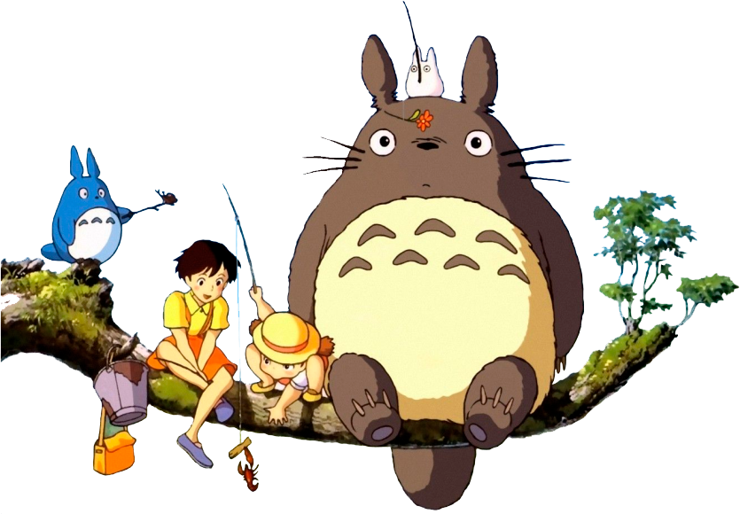

O ESTÚDIO GHIBLI
Studio Ghibli Inc. (株式会社スタジオジブリ Kabushiki-gaisha Sutajio Jiburi) é estúdio de cinema de animação japonês com sede em Koganei, Tóquio. O estúdio é mais conhecido por seus filmes de animação e também produziu vários curtas, comerciais de televisão e um filme de televisão. Foi fundado em 15 de junho de 1985 pelos diretores Hayao Miyazaki e Isao Takahata e pelo produtor Toshio Suzuki, após o sucesso do filme de anime de Topcraft, Nausicaä do Vale do Vento(1984). O Studio Ghibli também colaborou com os estúdios de videogame no desenvolvimento visual de vários jogos. Seis dos filmes de Studio Ghibli estão entre os 10 filmes de anime com maior bilheteria produzidos no Japão, sendo Sen to Chihiro no Kamikakushi o segundo mais alto, arrecadando mais de US$ 360 milhões em todo o mundo. Muitos de seus trabalhos ganharam o prêmio Animage Anime Grand Prix e quatro ganharam o Prêmio da Academia de Animação do Ano do Japão. Cinco dos filmes de Studio Ghibli receberam indicações ao Oscar. Sen to Chihiro no Kamikakushi ganhou o Urso de Ouro em 2002 e o Oscar de Melhor Filme de Animação em 2003. Totoro, um personagem de Tonari no Totoro é o mascote do estúdio.